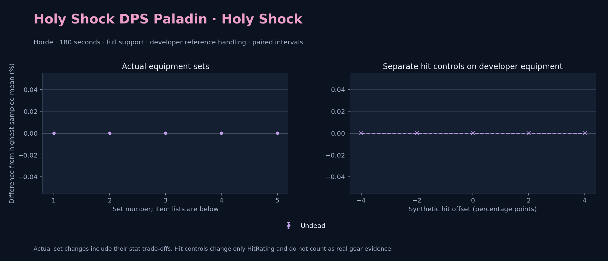

Horde · Undead

No pet or guardian appears in the reference combat metrics. Reference: Undead, developer equipment, 180 seconds and full support. Pet choices remain those of the developer build.
WoWSims developer · Holy Shock
Unimplemented enchant or active set effects: [{"id": 181, "pieces": 2, "effects": ["+8 All Resistances."]}]
180 seconds, full support and original developer references. Hit below is generic sheet melee / spell hit; school and talent bonuses can be attached directly to spells.
| Race | DPS | Gap and interval | Generic hit | Replay |
|---|---|---|---|---|
| Undead | 820.68 | +0.000% ± 0.000 | 6.2% / 6.2% | Native input · Website JSON |
| Slot | Item | ID | Enchant |
|---|---|---|---|
| Head | Magister's Crown | 16686 | |
| Neck | Archlight Talisman | 15856 | Enchant Necklace - Spell Power |
| Shoulder | Lightforge Spaulders | 16729 | |
| Back | Arcanoweave Cloak | 272411 | Enchant Cloak - Lesser Agility |
| Chest | Vest of Elements | 16666 | Enchant Chest - Greater Stats |
| Wrist | Lightforge Bracers | 16722 | Enchant Bracer - Healing Power |
| Hands | Gauntlets of Elements | 16672 | Enchant Gloves - Healing Power |
| Waist | Lightforge Belt | 16723 | |
| Legs | Magister's Leggings | 16687 | Mystic Rugged Armor Kit |
| Feet | Magister's Boots | 16682 | Mystic Rugged Armor Kit |
| Ring 1 | Blessed Band of Light | 272407 | |
| Ring 2 | Channeler's Ring | 272406 | |
| Trinket 1 | Jewel of the Guard Captain | 270225 | |
| Trinket 2 | Adaptive Combat Assistant | 272437 | |
| Main hand | Manual Crowd Pummeler | 9449 | Enchant 2H Weapon - Mighty Spell Power |
| Ranged / relic | Libram of Law | 272435 |
Published ranked alternatives · Published pre-raid
Recorded source replacements: [{"slot": "feet", "from": 22240, "to": 275606, "publishedAlternativeRank": 2, "publishedEpDelta": -85.2, "reason": "First published alternative compatible with the current WoWSims database, class, faction and occupied slots."}]
180 seconds, full support and original developer references. Hit below is generic sheet melee / spell hit; school and talent bonuses can be attached directly to spells.
| Race | DPS | Gap and interval | Generic hit | Replay |
|---|---|---|---|---|
| Undead | 814.72 | +0.000% ± 0.000 | 6.9% / 6.9% | Native input · Website JSON |
| Slot | Item | ID | Enchant |
|---|---|---|---|
| Head | Stalwart Helm | 250599 | Arcanum of Focus |
| Neck | Archlight Talisman | 15856 | Enchant Necklace - Spell Power |
| Shoulder | Mantle of the Timbermaw | 19050 | |
| Back | Arcanoweave Cloak | 272411 | Enchant Cloak - Agility |
| Chest | Vest of Elements | 16666 | Enchant Chest - Major Intellect |
| Wrist | Bindings of Elements | 16671 | Enchant Bracer - Greater Spellpower |
| Hands | Gauntlets of Elements | 16672 | Enchant Gloves - Minor Haste |
| Waist | Belt of the Archmage | 18405 | |
| Legs | Ironfeather Leggings | 252486 | Arcanum of Focus |
| Feet | Venomspew Footpads | 275606 | Mystic Rugged Armor Kit |
| Ring 1 | Channeler's Ring | 272406 | |
| Ring 2 | Blessed Band of Light | 272407 | |
| Trinket 1 | Weakness Analyzer | 272438 | |
| Trinket 2 | Rune of the Guard Captain | 19120 | |
| Main hand | Stormcarver | 250617 | Enchant 2H Weapon - Spellblasting |
| Ranged / relic | Libram of Law | 272435 |
Published one-slot hit alternative · Published pre-raid
One source-listed alternative; at least 80% of the source slot score retained. Reported hit selects the contrast; only native stats determine simulation outcomes. This is an experimental combination, not an endorsed best set.
Recorded source replacements: [{"slot": "feet", "from": 22240, "to": 275606, "publishedAlternativeRank": 2, "publishedEpDelta": -85.2, "reason": "First published alternative compatible with the current WoWSims database, class, faction and occupied slots."}]
180 seconds, full support and original developer references. Hit below is generic sheet melee / spell hit; school and talent bonuses can be attached directly to spells.
| Race | DPS | Gap and interval | Generic hit | Replay |
|---|---|---|---|---|
| Undead | 809.11 | +0.000% ± 0.000 | 5.9% / 5.9% | Native input · Website JSON |
| Slot | Item | ID | Enchant |
|---|---|---|---|
| Head | Stalwart Helm | 250599 | Arcanum of Focus |
| Neck | Archlight Talisman | 15856 | Enchant Necklace - Spell Power |
| Shoulder | Mantle of the Timbermaw | 19050 | |
| Back | Arcanoweave Cloak | 272411 | Enchant Cloak - Agility |
| Chest | Vest of Elements | 16666 | Enchant Chest - Major Intellect |
| Wrist | Bindings of Elements | 16671 | Enchant Bracer - Greater Spellpower |
| Hands | Gauntlets of Elements | 16672 | Enchant Gloves - Minor Haste |
| Waist | Belt of the Archmage | 18405 | |
| Legs | Ironfeather Leggings | 252486 | Arcanum of Focus |
| Feet | Venomspew Footpads | 275606 | Mystic Rugged Armor Kit |
| Ring 1 | Channeler's Ring | 272406 | |
| Ring 2 | Maiden's Circle | 13001 | |
| Trinket 1 | Weakness Analyzer | 272438 | |
| Trinket 2 | Rune of the Guard Captain | 19120 | |
| Main hand | Stormcarver | 250617 | Enchant 2H Weapon - Spellblasting |
| Ranged / relic | Libram of Law | 272435 |
Published ranked alternatives · Published pre-raid
Recorded source replacements: [{"slot": "shoulder", "from": 227808, "to": 19050, "publishedAlternativeRank": 1, "publishedEpDelta": -66.9, "reason": "First published alternative compatible with the current WoWSims database, class, faction and occupied slots."}, {"slot": "waist", "from": 228190, "to": 18405, "publishedAlternativeRank": 1, "publishedEpDelta": -92.3, "reason": "First published alternative compatible with the current WoWSims database, class, faction and occupied slots."}, {"slot": "feet", "from": 22240, "to": 252471, "publishedAlternativeRank": 3, "publishedEpDelta": -74.9, "reason": "First published alternative compatible with the current WoWSims database, class, faction and occupied slots."}]
180 seconds, full support and original developer references. Hit below is generic sheet melee / spell hit; school and talent bonuses can be attached directly to spells.
| Race | DPS | Gap and interval | Generic hit | Replay |
|---|---|---|---|---|
| Undead | 810.01 | +0.000% ± 0.000 | 5.9% / 5.9% | Native input · Website JSON |
| Slot | Item | ID | Enchant |
|---|---|---|---|
| Head | Stalwart Helm | 250599 | Arcanum of Focus |
| Neck | Archlight Talisman | 15856 | Enchant Necklace - Spell Power |
| Shoulder | Mantle of the Timbermaw | 19050 | |
| Back | Arcanoweave Cloak | 272411 | Enchant Cloak - Agility |
| Chest | Vest of Elements | 16666 | Enchant Chest - Major Intellect |
| Wrist | Bindings of Elements | 16671 | Enchant Bracer - Greater Spellpower |
| Hands | Gauntlets of Elements | 16672 | Enchant Gloves - Minor Haste |
| Waist | Belt of the Archmage | 18405 | |
| Legs | Ironfeather Leggings | 252486 | Arcanum of Focus |
| Feet | Skycaller's Leather Boots | 252471 | Mystic Rugged Armor Kit |
| Ring 1 | Maiden's Circle | 13001 | |
| Ring 2 | Channeler's Ring | 272406 | |
| Trinket 1 | Weakness Analyzer | 272438 | |
| Trinket 2 | Rune of the Guard Captain | 19120 | |
| Main hand | Stormcarver | 250617 | Enchant 2H Weapon - Spellblasting |
| Ranged / relic | Libram of Law | 272435 |
Published one-slot hit alternative · Published pre-raid
One source-listed alternative; at least 80% of the source slot score retained. Reported hit selects the contrast; only native stats determine simulation outcomes. This is an experimental combination, not an endorsed best set.
Recorded source replacements: [{"slot": "shoulder", "from": 227808, "to": 19050, "publishedAlternativeRank": 1, "publishedEpDelta": -66.9, "reason": "First published alternative compatible with the current WoWSims database, class, faction and occupied slots."}, {"slot": "waist", "from": 228190, "to": 18405, "publishedAlternativeRank": 1, "publishedEpDelta": -92.3, "reason": "First published alternative compatible with the current WoWSims database, class, faction and occupied slots."}, {"slot": "feet", "from": 22240, "to": 252471, "publishedAlternativeRank": 3, "publishedEpDelta": -74.9, "reason": "First published alternative compatible with the current WoWSims database, class, faction and occupied slots."}]
180 seconds, full support and original developer references. Hit below is generic sheet melee / spell hit; school and talent bonuses can be attached directly to spells.
| Race | DPS | Gap and interval | Generic hit | Replay |
|---|---|---|---|---|
| Undead | 826.69 | +0.000% ± 0.000 | 6.9% / 6.9% | Native input · Website JSON |
| Slot | Item | ID | Enchant |
|---|---|---|---|
| Head | Stalwart Helm | 250599 | Arcanum of Focus |
| Neck | Archlight Talisman | 15856 | Enchant Necklace - Spell Power |
| Shoulder | Mantle of the Timbermaw | 19050 | |
| Back | Arcanoweave Cloak | 272411 | Enchant Cloak - Agility |
| Chest | Vest of Elements | 16666 | Enchant Chest - Major Intellect |
| Wrist | Bindings of Elements | 16671 | Enchant Bracer - Greater Spellpower |
| Hands | Gauntlets of Elements | 16672 | Enchant Gloves - Minor Haste |
| Waist | Belt of the Archmage | 18405 | |
| Legs | Ironfeather Leggings | 252486 | Arcanum of Focus |
| Feet | Skycaller's Leather Boots | 252471 | Mystic Rugged Armor Kit |
| Ring 1 | Maiden's Circle | 13001 | |
| Ring 2 | Channeler's Ring | 272406 | |
| Trinket 1 | Weakness Analyzer | 272438 | |
| Trinket 2 | Rune of the Guard Captain | 19120 | |
| Main hand | Legionite Glaive | 250619 | Enchant 2H Weapon - Spellblasting |
| Ranged / relic | Libram of Law | 272435 |
The same declared pool is available to every race. Each race keeps its best validation-sample set with its screening-selected racial policy. Separate samples confirm that choice, with fresh precision samples near the practical-loss boundary. Gaps use the highest sampled mean under that same duration, support and reference treatment as their reference. A zero reference gap does not certify a race; the main matrix also allows uncertainty in the leader.
| Pool | Seconds | Support | References | Race | DPS | Gap and interval | Racial policies / mana | Selected set | Generic hit: melee / spell | Replay |
|---|---|---|---|---|---|---|---|---|---|---|
| published-pre-raid | 60 | full | developer | Undead | 831.48 | +0.000% ± 0.0005,000 iterations | developer / developer / developerMana waits 0.0s | published-paladin-holy-shock-horde-d40bbc82ad606f9d-higher-hit | 6.9% / 6.9% | Input · Result · Stats |
| published-pre-raid | 60 | full | explicit | Undead | 831.48 | +0.000% ± 0.0005,000 iterations | developer / developer / developerMana waits 0.0s | published-paladin-holy-shock-horde-d40bbc82ad606f9d-higher-hit | 6.9% / 6.9% | Input · Result · Stats |
| published-pre-raid | 60 | self | developer | Undead | 567.76 | +0.000% ± 0.0005,000 iterations | developer / developer / developerMana waits 0.0s | published-paladin-holy-shock-horde-d40bbc82ad606f9d-higher-hit | 6.9% / 6.9% | Input · Result · Stats |
| published-pre-raid | 60 | self | explicit | Undead | 567.76 | +0.000% ± 0.0005,000 iterations | developer / developer / developerMana waits 0.0s | published-paladin-holy-shock-horde-d40bbc82ad606f9d-higher-hit | 6.9% / 6.9% | Input · Result · Stats |
| published-pre-raid | 180 | full | developer | Undead | 826.59 | +0.000% ± 0.0005,000 iterations | developer / developer / developerMana waits 0.0s | published-paladin-holy-shock-horde-d40bbc82ad606f9d-higher-hit | 6.9% / 6.9% | Input · Result · Stats · Website JSON |
| published-pre-raid | 180 | full | explicit | Undead | 826.59 | +0.000% ± 0.0005,000 iterations | developer / developer / developerMana waits 0.0s | published-paladin-holy-shock-horde-d40bbc82ad606f9d-higher-hit | 6.9% / 6.9% | Input · Result · Stats |
| published-pre-raid | 180 | self | developer | Undead | 474.96 | +0.000% ± 0.0005,000 iterations | developer / developer / developerMana waits 49.0s | published-paladin-holy-shock-horde-d40bbc82ad606f9d-higher-hit | 6.9% / 6.9% | Input · Result · Stats |
| published-pre-raid | 180 | self | explicit | Undead | 474.96 | +0.000% ± 0.0005,000 iterations | developer / developer / developerMana waits 49.0s | published-paladin-holy-shock-horde-d40bbc82ad606f9d-higher-hit | 6.9% / 6.9% | Input · Result · Stats |
| published-pre-raid | 300 | full | developer | Undead | 810.72 | +0.000% ± 0.0005,000 iterations | developer / developer / developerMana waits 0.0s | published-paladin-holy-shock-horde-d40bbc82ad606f9d-higher-hit | 6.9% / 6.9% | Input · Result · Stats |
| published-pre-raid | 300 | full | explicit | Undead | 810.72 | +0.000% ± 0.0005,000 iterations | developer / developer / developerMana waits 0.0s | published-paladin-holy-shock-horde-d40bbc82ad606f9d-higher-hit | 6.9% / 6.9% | Input · Result · Stats |
| published-pre-raid | 300 | self | developer | Undead | 433.44 | +0.000% ± 0.0005,000 iterations | developer / developer / developerMana waits 140.0s | published-paladin-holy-shock-horde-d40bbc82ad606f9d-higher-hit | 6.9% / 6.9% | Input · Result · Stats |
| published-pre-raid | 300 | self | explicit | Undead | 433.44 | +0.000% ± 0.0005,000 iterations | developer / developer / developerMana waits 140.0s | published-paladin-holy-shock-horde-d40bbc82ad606f9d-higher-hit | 6.9% / 6.9% | Input · Result · Stats |
| developer-reference | 60 | full | developer | Undead | 848.28 | +0.000% ± 0.0005,000 iterations | developer / developer / developerMana waits 0.0s | developer | 6.2% / 6.2% | Input · Result · Stats |
| developer-reference | 60 | full | explicit | Undead | 848.28 | +0.000% ± 0.0005,000 iterations | developer / developer / developerMana waits 0.0s | developer | 6.2% / 6.2% | Input · Result · Stats |
| developer-reference | 60 | self | developer | Undead | 565.36 | +0.000% ± 0.0005,000 iterations | developer / developer / developerMana waits 0.0s | developer | 6.2% / 6.2% | Input · Result · Stats |
| developer-reference | 60 | self | explicit | Undead | 565.36 | +0.000% ± 0.0005,000 iterations | developer / developer / developerMana waits 0.0s | developer | 6.2% / 6.2% | Input · Result · Stats |
| developer-reference | 180 | full | developer | Undead | 820.52 | +0.000% ± 0.0005,000 iterations | developer / developer / developerMana waits 0.0s | developer | 6.2% / 6.2% | Input · Result · Stats · Website JSON |
| developer-reference | 180 | full | explicit | Undead | 820.52 | +0.000% ± 0.0005,000 iterations | developer / developer / developerMana waits 0.0s | developer | 6.2% / 6.2% | Input · Result · Stats |
| developer-reference | 180 | self | developer | Undead | 482.54 | +0.000% ± 0.0005,000 iterations | developer / developer / developerMana waits 43.0s | developer | 6.2% / 6.2% | Input · Result · Stats |
| developer-reference | 180 | self | explicit | Undead | 482.54 | +0.000% ± 0.0005,000 iterations | developer / developer / developerMana waits 43.0s | developer | 6.2% / 6.2% | Input · Result · Stats |
| developer-reference | 300 | full | developer | Undead | 815.17 | +0.000% ± 0.0005,000 iterations | developer / developer / developerMana waits 0.0s | developer | 6.2% / 6.2% | Input · Result · Stats |
| developer-reference | 300 | full | explicit | Undead | 815.17 | +0.000% ± 0.0005,000 iterations | developer / developer / developerMana waits 0.0s | developer | 6.2% / 6.2% | Input · Result · Stats |
| developer-reference | 300 | self | developer | Undead | 440.04 | +0.000% ± 0.0005,000 iterations | developer / developer / developerMana waits 132.4s | developer | 6.2% / 6.2% | Input · Result · Stats |
| developer-reference | 300 | self | explicit | Undead | 440.04 | +0.000% ± 0.0005,000 iterations | developer / developer / developerMana waits 132.4s | developer | 6.2% / 6.2% | Input · Result · Stats |
180 seconds, full support and the developer equipment anchor. These checks test creature sensitivity without a full gear search.
| Target | References | Race | DPS | Gap and interval | Replay |
|---|---|---|---|---|---|
| beast | developer | Undead | 820.68 | +0.000% ± 0.000 | Input · Result |
| beast | explicit | Undead | 820.68 | +0.000% ± 0.000 | Input · Result |
| elemental | developer | Undead | 820.68 | +0.000% ± 0.000 | Input · Result |
| elemental | explicit | Undead | 820.68 | +0.000% ± 0.000 | Input · Result |
Some equipment has unimplemented enchant or set effects
These known-issue notes are source context. Runtime checks establish current cast coverage, including Mutilate. They do not prove every mechanic matches the game.